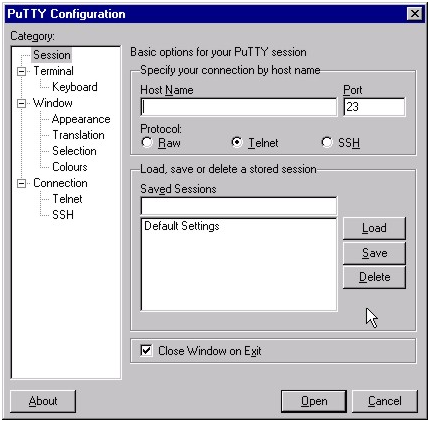
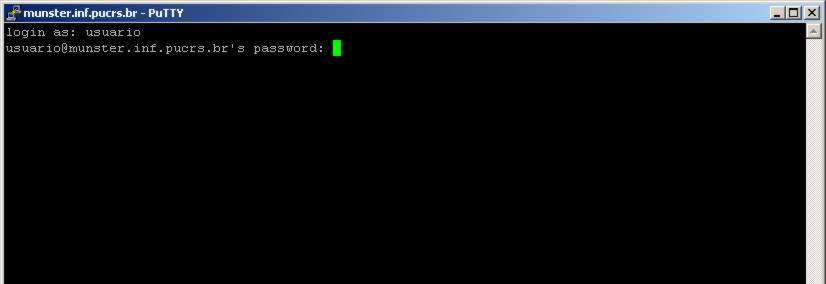

◉ Instalando e configurando servidor SSH (Ubuntu)
Este tutorial tem por objetivo ensinar como realizar as configurações básicas de um servidor SSH.
Antes de começarmos a configurar o SSH no GNU/Linux precisamos compreender o que ele é e para
o que ele serve, pois só assim conseguiremos saber como aplicá-lo para atender nossas
necessidades administrativas.
No mundo onde necessitamos a cada dia mais de mecanismos que facilitem a administração de
servidores Linux, surgiu uma ferramenta para possibilitar o acesso remoto ao servidor.
Essa ferramenta é o SSH, ela permite que de qualquer lugar da rede, você estando em uma
máquina com Linux ou Windows, consiga comunicar-se com o servidor a fim de realizar rotinas
administrativas como se estivesse diante do próprio servidor.
Uma observação interessante é que para utilizar o Windows para administrar o Linux é necessário
utilizar uma aplicação leve e gratuita chamada Putty, que deve ser instalada no Windows.
Antigamente tínhamos o telnet, ferramenta que era utilizada para administração remota e hoje temos
o SSH, que é uma ferramenta muito mais segura e eficiente.
Instalando e configurando o SSH no servidor
Para instalarmos o SSH no Ubuntu é muito simples. Basta, estando no shell como root, digitarmos:
# apt-get install openssh-server
E esperar que ele realize o download e instalação automática. O SSH, após instalado, gera alguns
arquivos de configuração e o principal deles é o /etc/ssh/sshd_config - arquivo de configuração
do servidor SSH.
Primeiro passo: vamos começar editando o principal arquivo de configuração, o sshd_config encontrado
em: /etc/ssh/sshd_config. Para tal, estando no shell como root, digite:
# vim sshd_config
E realize as seguintes alterações dentro do arquivo:
Em port coloque o padrão 22 ou uma de sua escolha. Esse campo diz ao SSH que ele estará escutando
as requisições vindas de outros computadores por esta porta ficando assim:
port 22
Na linha #AllowUsers, que pode existir ou não (se não existir crie-a), você pode deixá-la comentada
para que todos os usuários possam acessar o servidor ou retirar o comentário ("#") e especificar
um usuário. A linha pode ficar assim, caso deseje especificar um usuário único em poder de acesso
ao servidor remotamente:
AllowUsers racy
Na linha "#PermitRootLogin yes" (caso não exista, crie-a) você pode remover o comentário se desejar
que o root possa se logar remotamente, caso não deseje remova o comentário ("#") e troque o yes por
no.
Obs. 1: Se você deseja que o root se conecte, não coloque a linha AllowUsers.
Obs. 2: Se você deseja que o seu usuário comum conecte-se e não o root, você deverá coloca as duas
linhas, então só seu usuário irá conectar, mas ele não poderá virar root.
Feito essas configurações, salve o arquivo. ;-)
Segundo passo: agora precisamos parar e iniciar o serviço fazendo com que nossas configurações
entrem em vigor. Para isso, ainda estando como root, digite:
# /etc/init.d/ssh stop
# /etc/init.d/ssh start
Agora nós já temos o servidor SSH em pleno funcionamento pronto para as requisições de administração
remota.
Instalando e configurando o SSH no cliente Linux
Basta realizar a instalação do SSH cliente. Estando no shell como root, digitaremos:
# apt-get install openssh-client
Instalando e configurando o SSH no cliente Windows
Será necessário a utilização de um aplicativo que dê suporte ao SSH, um aplicativo excelente para
tal é o Putty, que é gratuito e levíssimo, tão leve que não precisa nem instalar ele já roda só
de dar dois cliques. ;-)
Após executá-lo ele mostrara a seguinte tela:

Seu uso é bastante simples, você digita em Host Name o IP do servidor e em Port você coloca a porta,
que no caso é 22 e em Conection Type, basta marcar a opção SSH. Agora basta clicar em Open e ele
abrirá a tela no qual você poderá realizar toda a administração no seu servidor.
Esta é a tela que irá lhe pedir o usuário e a senha para logar-se no servidor e começar a
administrar...

Logando e realizando algumas operações na máquina servidor via cliente Linux:
Sintaxe: ssh -l
# ssh -l root 192.168.10.101
Depois de logado você pode fazer tudo que poderia fazer estando sentado na frente do servidor,
como dar comandos, editar arquivos etc.
Conclusão
Feito todas as configurações citadas aqui, você está apto a realizar suas funções administrativas
no servidor Linux, estando em uma máquina Windows através do programa Putty, e também estando em
uma maquina Linux.
Podemos então concluir que o SSH é uma ferramenta que cumpre seu papel em facilitar a vida de
administradores Linux que necessitam realizar uma administração de forma remota.